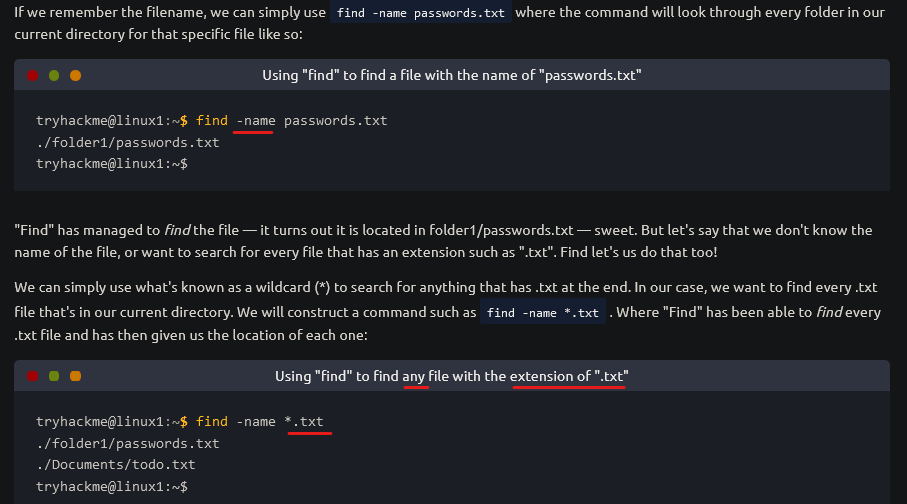

find

find . -type f -size 1033c → boyutu 1033 byte olan dosyaları göster. “.” içinde bulunduğumuz klasörde arama yap demektir. Her yerde aramasını istiyorsak “.” yerine “/” koymalıyız.
find / -type f -size 33c -group bandit6 -user bandit7 → bu şekilde grup ve user belirterek arama yapabiliriz.